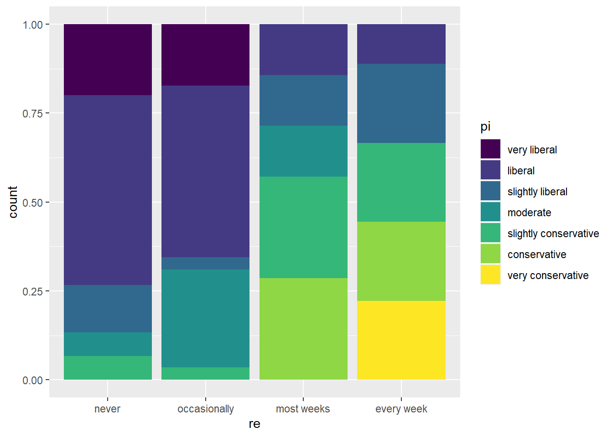
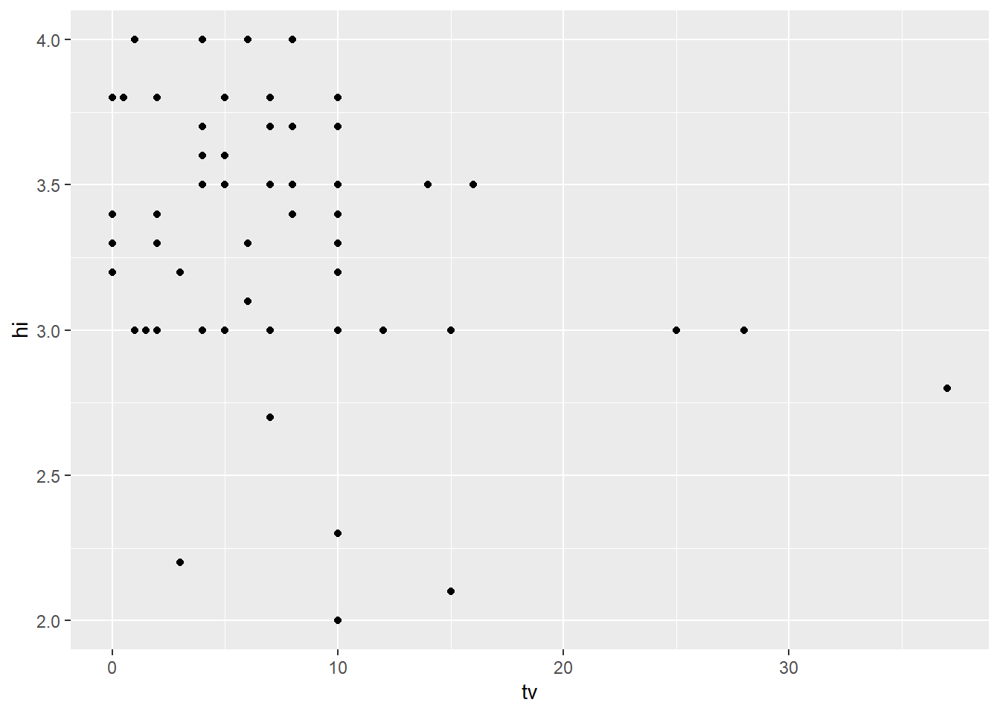

Code
library(tidyverse)
library(alr4)
library(smss)
library(ggplot2)
library(stargazer)
knitr::opts_chunk$set(echo = TRUE)library(tidyverse)
library(alr4)
library(smss)
library(ggplot2)
library(stargazer)
knitr::opts_chunk$set(echo = TRUE)United Nations (Data file: UN11in alr4) The data in the file UN11 contains several variables, including ppgdp, the gross national product per person in U.S. dollars, and fertility, the birth rate per 1000 females, both from the year 2009. The data are for 199 localities, mostly UN member countries, but also other areas such as Hong Kong that are not independent countries. The data were collected from the United Nations (2011). We will study the dependence of fertility on ppgdp.
# Loading in data
data(UN11)(a) Identify the predictor and the response.
In this scenario, the predictor variable is ppgdp (GDP per capita) and the response variable is fertility (birthrate per 1000 women).
(b) Draw the scatterplot of fertility on the vertical axis versus ppgdp on the horizontal axis and summarize the information in this graph. Does a straight-line mean function seem to be plausible for a summary of this graph?
ggplot(data = UN11, aes(x = ppgdp, y = fertility)) +
geom_point()
From the plot, it’s easy to tell that a straight-line mean function isn’t plausible to summarize this graph. This graph portrays an L-shaped structure which doesn’t fit a linear function.
(c) Draw the scatterplot of log(fertility) versus log(ppgdp) using natural logarithms. Does the simple linear regression model seem plausible for a summary of this graph? If you use a different base of logarithms, the shape of the graph won’t change, but the values on the axes will change.
ggplot(data = UN11, aes(x = log(ppgdp), y = log(fertility))) +
geom_point()
In this case, using natural logarithms, a linear regression model is plausible! We can see tracings of linearity and even distribution using a little imagination to visualize a negatively-sloped, straight line receding through the center of the point distribution.
Annual income, in dollars, is an explanatory variable in a regression analysis. For a British version of the report on the analysis, all responses are converted to British pounds sterling (1 pound equals about 1.33 dollars, as of 2016).
(a) How, if at all, does the slope of the prediction equation change?
The slope of the prediction equation would change in the same way that dollars would be converted to pounds, i.e. divide by 1.33.
(b) How, if at all, does the correlation change?
Correlation would not change at all since it isn’t affected by unit change.
Water runoff in the Sierras (Data file: water in alr4) Can Southern California’s water supply in future years be predicted from past data? One factor affecting water availability is stream runoff. If runoff could be predicted, engineers, planners, and policy makers could do their jobs more efficiently. The data file contains 43 years’ worth of precipitation measurements taken at six sites in the Sierra Nevada mountains (labeled APMAM, APSAB, APSLAKE, OPBPC, OPRC, and OPSLAKE) and stream runoff volume at a site near Bishop, California, labeled BSAAM. Draw the scatterplot matrix for these data and summarize the information available from these plots. (Hint: Use the pairs() function.)
data(water)
pairs(water)
From the visualization above, I do not believe that you could accurately predict Southern California’s water supply in future years using past data. There doesn’t appear to be any correlation or pattern in any variable interaction with the Year variable. Furthermore, it seems as thought there is a bit of variable dependence among the “O” and “A” variable groups. Both these reasons lead me to believe that a model derived from this data wouldn’t be accurate.
Professor ratings (Data file: Rateprof in alr4) In the website and online forum RateMyProfessors.com, students rate and comment on their instructors. Launched in 1999, the site includes millions of ratings on thousands of instructors. The data file includes the summaries of the ratings of 364 instructors at a large campus in the Midwest (Bleske-Rechek and Fritsch, 2011). Each instructor included in the data had at least 10 ratings over a several year period. Students provided ratings of 1–5 on quality, helpfulness, clarity, easiness of instructor’s courses, and raterInterest in the subject matter covered in the instructor’s courses. The data file provides the averages of these five ratings. Create a scatterplot matrix of these five variables. Provide a brief description of the relationships between the five ratings.
data(Rateprof)
pairs(Rateprof[,c('quality', 'clarity', 'helpfulness',
'easiness', 'raterInterest')])
This visualization presents a different set of circumstances than that from the previous graph. It’s easy to note that there is a very strong pair-wise relationship within this model between the quality, clarity and helpfulness variables. Easiness also seems heavily correlated, but not as strong as the previously mentioned variables. raterInterest also seems somewhat correlated, but not as strongly as any of the previous variables.
For the student.survey data file in the smss package, conduct regression analyses relating (by convention, y denotes the outcome variable, x denotes the explanatory variable) (i) y = political ideology and x = religiosity, (ii) y = high school GPA and x = hours of TV watching.
(You can use ?student.survey in the R console, after loading the package, to see what each variable means.)
(a) Graphically portray how the explanatory variable relates to the outcome variable in each of the two cases
The graph below is a visualization of religiosity and political ideology. In it we can see the more frequently someone practices their religious beliefs, the more likely it that they are conservative. Put conversely, the less religious someone is, the more likely the person will be liberal
data(student.survey)
ggplot(data = student.survey, aes(x = re, fill = pi)) +
geom_bar(position = "fill")
This last plot shows the relationship between high school GPA and hours watching TV.
ggplot(data = student.survey, aes(x = tv, y = hi)) +
geom_point() 
(b) Summarize and interpret results of inferential analyses.
m1 <- lm(as.numeric(pi) ~ as.numeric(re),
data = student.survey)
m2 <- lm(hi ~ tv, data = student.survey)
stargazer(m1, m2, type = 'text',
dep.var.labels = c('Pol. Ideology', 'HS GPA'),
covariate.labels = c('Religiosity', 'Hours of TV')
)
==========================================================
Dependent variable:
----------------------------
Pol. Ideology HS GPA
(1) (2)
----------------------------------------------------------
Religiosity 0.970***
(0.179)
Hours of TV -0.018**
(0.009)
Constant 0.931** 3.441***
(0.425) (0.085)
----------------------------------------------------------
Observations 60 60
R2 0.336 0.072
Adjusted R2 0.324 0.056
Residual Std. Error (df = 58) 1.345 0.447
F Statistic (df = 1; 58) 29.336*** 4.471**
==========================================================
Note: *p<0.1; **p<0.05; ***p<0.01From the stargazer chart, it’s shown that Religiosity is positively correlated with Political Ideology. It’s also shown to be statistically significant at the p<0.01 significance level
Finally, the chart also shows that TV hours are negatively correlated with HS GPA at a statistically significant level of p<0.05.